Yugo et Rin rencontrent enfin Jack ! Comment vont-ils gérer ça ?
Yugioh: The Power of Four
Jack Atlas,
un grand jeune homme aux cheveux blonds hérissés et portant des vêtements de rider blancs et gris, observa le comportement enfantin de
Yugo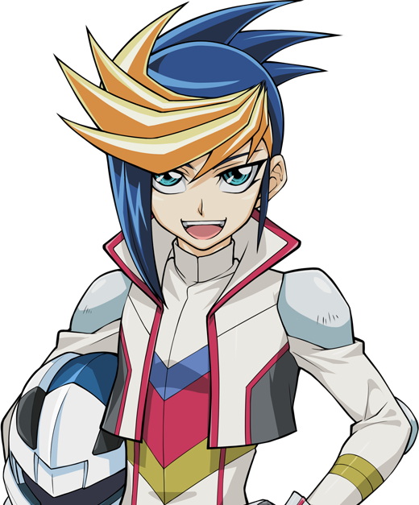 et de
Rin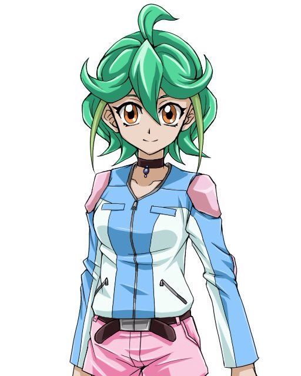 avec un
regard apparent de désapprobation. Il est arrivé au penthouse juste à temps pour voir les deux adolescents tomber dans la piscine et commencer à s'éclabousser
mutuellement. Il ne le montrait pas, mais il prenait un grand plaisir à observer leur réaction apparement choquées, de le voir.
Comme si l'eau était soudainement devenue trop chaude, Yugo et Rin sont sortis de la piscine rapidement, et se sont inclinés devant l'homme qu'ils idolâtraient, trempés et les
yeux fermés.
: Jack Atlas ! King des Riding Duels ! N-Nous ! C'est-à-dire Yugo et moi-même, sommes... t-très honorés de vous rencontrer, monsieur !
Disait Rin, dans une salutation précipitée, encore visiblement embarrassée.
: O-Ouais ! Rin et moi ! V-Vous voyez... ! Le truc, c'est que nous... n'aurions jamais pensé vous rencontrer... comme ça ! Ce n'est DEFINITIVEMENT pas cette façon
dont nous nous attendions à vous...
Yugo enchaîna, ressemblant à un garçon auquel, on l'aurais pris la main dans le sac.
: Il suffit ! Tenez-vous droit, tous les deux !
Ordonna ce dernier.
: Oui, monsieur !
À ses mot, les deux adolescents se redressèrent, les yeux ouverts, et tous deux encore effrayés, alors que leurs vétements, et eux-même étaient encore trempés.
Yusei
et les jumeaux sont restés en arrière et n'ont rien dit, tout en regardant la petite mise en scène. Jack a ensuite commencé à marcher autour de Yugo et Rin, les
scrutant toujours. Aucun d'entre eux n'osait parler, mais ils déglutissaient en suivant l'homme avec leurs yeux craintifs. Jack s'arrêta devant eux, son expression ne
changeant pas le moins du monde.
: Yugo et Rin, Yusei m'a informé de vous deux et de votre situation. Tout d'abord, laissez-moi être parfaitement clair. Bien que nous ayons de nombreuses
similitudes, je ne suis pas le
Jack Atlas
de votre monde.
: Cependant, cela ne change rien au fait que vous êtes en présence du King ! En tant que tel, n'oubliez de faire preuve, et de montrer le même respect
pour ce "King" ! Est-ce que c'est compris !?
: Oui monsieur !
Disaient-ils encore ensemble, à l'unisson.
Après un long moment de silence, Jack sourit maintenant, prenant secrètement plaisir à les regarder se tortiller. Quand il parla, il avait l'air beaucoup plus calme.
: Très bien. Maintenant, des questions ?
Ce dernier demanda.
Rin fut la première à prendre la parole, avec un son encore un peu hésitant.
: J'ai, euh... J'ai une question, monsieur.
Rin demanda, sa voix tremblait.
: Pose-là Rin.
Jack lui a simplement dit.
: Co-Comment... vous et Yusei... vous vous connaissez-vous ?
Elle a à peine réussi à dire.
Au lieu de répondre, Jack remonta la manche de son bras droit et la montra au duo. Yugo et Rin sursautèrent : c'était une
marque de naissance du Dragon,
comme celles que Yusei et les autres avaient. Dans le cas de Jack, cela ressemblait à une paire d'ailes de dragon.
: Comme vous pouvez le voir, je porte également la marque de naissance des Signers (trad: Signers = Pactisants en VF). Comme Yusei, Crow, Aki, Rua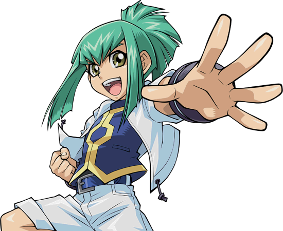 et Ruka , j'ai aussi été choisi par Akakiryu
(nDc: Akakiryū = Dragon Cramoisi en VF) pour aider à protéger le monde d'un grand mal. Dès que Yusei est revenu ici avec vous deux, ma marque m'a alerté et je
suis immédiatement revenu ici. Je viens juste d'arriver pour vous voir tous les deux... dans l'eau.
Jack expliqua la dernière partie sur un ton désintéréssé, mettant encore plus les deux adolescents dans l'embarras. Un autre moment de silence inconfortable a suivi avant que Yugo ait
finalement le courage de parler.
: Euh... monsieur le King, Jack, et bien...
Yugo commença à parler, mais d'une manière balbutiante.
: Jeune homme ! Soit du t'adresses à moi par mon prénom, ou bien par monsieur ! C'est compris ?
Il cria de nouveau.
: O-Oui, monsieur ! Bref, à propos de ma question...
Yugo reprena sa question, mais s'arrêta un instant.
: Oui ?
Demanda Jack avec impatience. Yugo déglutit une fois de plus et reprit la parole.
: Jack Atlas... J'ai toujours voulu me battre en duel contre vous... je veux dire, le vous de notre monde... depuis longtemps. Donc, euh ... ce que je voudrais
savoir, c'est ...
Yugo prit une profonde inspiration et laissa sortir.
: Est-ce que nous pouvons... avoir un duel ?
Rin resta bouche bée devant Yugo. Elle ne pensait pas qu'il oserait défier Jack Atlas comme ça. Il n'est peut-être pas celui qu'ils admirent, mais il doit quand
même être le meilleur ici. Elle voulait le réprimander pour cela, mais elle n'osait pas le faire avec Jack dans les parages.
Quant à Jack lui-même, il rétrécit ses yeux et s'est rapproché de Yugo jusqu'à ce qu'il soit juste en face de lui. Yugo avait l'impression de rapetisser sous le
regard de l'homme plus âgé.
: Alors, tu veux te battre en duel avec moi, Yugo ?
Il demanda doucement, faisant transpirer le garçon.
: Oui monsieur, je le veux.
Yugo répondit, en essayant de garder une voix stable.
Jack n'a rien dit, il fixait toujours Yugo. Il semblait le jauger. Puis, à la grande surprise de Yugo et Rin, Jack rigola. Les deux ont eu l'air confus. Quand il a cessé
de rire un moment plus tard, il s'est montré du doigt.
: Moi, Jack Atlas, je n'accepte pas les défis de n'importe qui ! Je ne me bats en duel qu'avec ceux que je juge digne de m'occuper durant mon temps, et je
préférere qu'ils soient plutôt... sec.
Jack souligna, voyant l'eau dégoutter encore des cheveux et des vêtements de Yugo. Cela le fit grimacer un peu. Il commençait à penser qu'il n'aurait jamais cette
chance, quand...
: Cependant...
Jack continua.
: Si tu veux vraiment m'affronter en duel, alors tu dois faire tes preuves.
: Comment ? Je suis prêt à faire n'importe quoi !
Yugo demanda, commençant maintenant à avoir un peu d'espoir.
: Possèdes-tu ta propre D-Wheel ?
: Oui monsieur ! Répondit Yugo. Jack eut alors un sourire au coin.
: Alors je veux que tu te battes en duel contre mon compagnon Signer, Crow Hogan. Et pas n'importe quel duel... mais un Riding Duel ! Si tu peux le battre,
alors je pourrais envisager de me battre contre toi. Sinon... Je ne voudrais pas perdre davantage de mon précieux temps avec quelqu'un qui pense avoir ce qu'il
faut pour affronter le King ! Surtout quand cette personne n'a pas le bon sens de porter des vêtements secs en ma présence ! Acceptes-tu ces conditions, jeune homme !?
Yugo ne pouvait pas croire cette chance qui se présentait à lui ! Une opportunité de prouver sa valeur en affrontant le King en personne ! Il devait juste battre Crow,
ce qui devint rapidement un dilemme. Crow et lui venaient juste de devenir amis, et maintenant Jack Atlas voulait qu'ils s'affrontent tous les deux. Pourtant, il ne
pouvait pas laisser passer l'occasion.
Yugo s'est corrigé après le regard sévère que Jack lui a lancé. Le Duelliste plus âgé hocha la tête après un moment.
: Très bien, alors. Yusei va t'aider à te préparer pour le prochain duel. Je vais aller dire à Crow de se préparer également. Le match commencera dans
deux heures. NE SOIS PAS en retard.
Jack disait en s'éloignant.
: Oh, fais-moi confiance Jack ! Je serai là ! Tu ne le regretteras pas !
Yugo cria à l'homme.
: Mais avant de partir... Je veux te parler rapidement, Yusei.
Jack lui dit juste avant de rentrer à l'intérieur.
: Bien sûr.
Yusei lui répondit en le suivant.
Dès qu'ils furent à l'intérieur, Rin laissa échapper un souffle de soulagement, tandis que Yugo criait de joie.
: OUI !!! Tu as entendu ça Rin !? J'ai une chance de me battre en duel avec Jack Atlas ! C'est pas génial ça !?
Au lieu de répondre, Rin fronça les sourcils en le regardant.
: Q-Quoi ? Qu'est-ce qu'il y a Rin ?
: Yugo, franchement, je n'arrive toujours pas à croire que tu l'aies défié comme ça. Je suis encore plus surprise qu'il t'ait donné cette chance. Je veux dire,
on ne s'attendait pas vraiment à ce qu'il débarque chez nous comme ça ! Ce qui me rappelle...
Rin s'est ensuite tournée vers les jumeaux, qui ont un peu reculé, un air un peu anxieux.
: Vous saviez tous les deux pour Jack Atlas, n'est-ce pas ?! Vous deux, Yusei, Crow, et Aki, vous le saviez tous et aucun d'entre vous ne nous as prévenu !
Rin se souvint alors de quelque chose. La nuit dernière, Yusei a dit que Yugo avait dormi dans la chambre de Jack. Elle avait pensé qu'il s'agissait d'un autre type
nommé Jack à ce moment-là. Elle n'aurait jamais pensé que c'était en réalié la chambre du King !
: Ecoute Rin, Jack nous a fait jurer de ne rien dire à toi et Yugo jusqu'à ce qu'il vous rencontre lui-même. Ce n'était pas notre idée !
Rua a expliqué nerveusement.
: C'est la vérité. S'il te plaît, calme-toi Rin.
Ruka a supplié, également recroquevillée par la colère de la jeune fille. Finalement, Rin s'est calmée avant de se tourner vers Yugo.
: N'es-tu pas contrarié par tout ça ?
Elle demanda. Yugo haussa les épaules.
: Pas vraiment. Je veux dire, bien sûr, je ne pensais pas que Yusei et ses amis étaient aussi potes avec Jack Atlas.
: Bon sang, je ne sais même pas comment il peut y avoir plus d'un Jack dans l'univers !
: Mais alors quoi ? Cela ne change rien au fait que je pourrais bientôt me battre en duel avec lui !
Il s'exclama avec excitation.
: Tu sais que tu dois d'abord battre Crow, n'est-ce pas ?
Elle demanda.
: Ouais, je sais.
Répondit ce dernier.
: Alors tu dois prendre cela plus sérieusement Yugo. Si le duel contre Rua m'a appris une chose, c'est qu'il ne faut JAMAIS sous-estimer un Signer ! Crow est
peut-être aussi fort que Yusei.
Rin prévena Yugo.
: Qui a dit que je ne prenais pas ça au sérieux !?
Fais-moi confiance Rin, je m'en occupe !
Son amie soupira, tout en secouant la tête. Quand les deux Signers adultes furent seuls et hors de vue, Jack se mettait à rire.
: Alors ? Comment as-tu pensé de ma prestation là-bas ?
Demanda Jack, qui semblait maintenant beaucoup plus détendu qu'à l'extérieur.
: Je pense que tu as fait une sacrée frayeur à Yugo et Rin.
Disait Yusei, en souriant un peu. Jack semblait fier de lui pour la performance qu'il venait de donner.
: Comme il se devait, au vu de qui se tenait au-dessus d'eux.
Jack a ensuite souri à son rival et ami.
: J'ai passé un sacré bon moment là-bas à intimider ces enfants. Merci de ne pas leur avoir parlé de moi, et de m'avoir laissé m'amuser.
Il le disait sincèrement.
: Pas de problème, même si tu aurais pu être un peu plus doux avec Yugo, alors que tu n'arrêtais pas de dire à quel point il était trempé.
Disait Yusei. Jack grogna alors, ignorant la dernière partie.
: Et toi, alors ? Tu es sûr que tu ne veux pas leur dire que...
Jack commenca sa phrase.
: Il n'y a pas besoin qu'ils le sachent. Je ne me suis jamais vraiment soucié de prendre ton titre de King à la Fortune Cup. Ca serait bien qu'ils pensent que
tu est le King ici.
Disait Yusei, l'air humble. Jack soupira et tapota l'épaule de Yusei.
: Fudo Yusei... la personne la plus humble que je connaisse.
Sur ce, Jack est parti informer Crow de son prochain duel avec Yugo.
Chapitre 11: Prouver sa force au "King". Yugo VS Crow.
Deux heures plus tard, tout le monde s'est retrouvé sur une piste de course d'apparence basique. Yugo et Rin (avec des vêtements secs maintenant) sont arrivés juste à
temps avec Yusei, Rua, et Ruka qui les accompagnaient. Sur la ligne de départ se tenaient Jack et Crow, ce dernier préparant sa D-Wheel pour le Riding Duel. Aki était
également là, ayant entendu parler du duel par Ruka. Elle s'est assise dans les tribunes et a salué le groupe de Yugo avec un sourire.
: Alors Yugo, tu es arrivé.
Jack disait. Yugo souria.
: C'est vrai Jack ! Je t'avais dis que je serais là !
Le Duelliste le plus âgé renifla.
: Essaie de m'impressionner.
Jack le dit d'un ton désintéréssé et se tenant à l'écart, permettant au garçon de se mettre sur sa
DWheel, à côté de
celle de Crow. Avant de le faire, il fit un
signe du pouce à Rin et aux autres.
: Souhaitez-moi bonne chance !
Il disait avant de s'engager sur la piste.
: Bonne chance, Yugo !
Rin cria, bien qu'elle ait encore de l'appréhension à ce sujet.
: Yugo va s'en sortir.
Yusei lui a assuré. Rin hocha la tête, mais toujours inquiète.
: Fais de ton mieux Yugo !
Ruka cria.
: Montre à Crow ce dont tu es capable !
Son jeune frère a ajouté.
Jack s'assit alors à la gauche de Yusei, tandis qu'Aki était à la droite de Yusei. Rin et les jumeaux étaient tous assis à la droite d'Aki. Rin se sentait toujours légèrement
nerveuse que Jack soit assis si près.
: J'ai dit à Crow de ne pas se retenir contre le garçon. Si Yugo veut vraiment m'affronter, il devra faire de même.
: Yugo est un D-Wheeler talentueux. Je suis sûr qu'il va te surprendre.
: Je suis impatient de voir ce qu'il peut faire.
Aki répondit. Jack ne dit rien et attendait que le match commence.
Sur la piste, Yugo et Crow se sont salués en se frappant le poing.
: Hey Yugo ! Tu es prêt pour notre duel ?
Demanda Crow avec un grand sourire.
: Oh ouais, bien sûr que je le suis ! Même avec les changements apportés à mon Deck, je suis sûr que je peux te botter les fesses !
Yugo répondit avec assurance. Crow ria face à la provocation de Yugo.
: Tu parles beaucoup, petit ! Voyons si tu as les compétences pour le faire !
Yugo sourit alors que lui et Crow montent sur leurs D-Wheels. Alors qu'ils examinaient une dernière fois les commandes, Yugo repensa aux "changements" apportés à son Deck...
Début du Flashback
Après avoir pris une douche et mis des vêtements maintenant secs, Yugo et Rin ont commencé à faire des préparatifs pour Yugo concernant son prochain duel avec Crow.
Après avoir examiné sa D-Wheel, Yugo pensait que rien ne pouvait aller mal. Jusqu'à ce que Yusei fasse une suggestion très inattendue.
: Ta D-Wheel est peut-être en bon état, mais tu devrais faire quelques ajustements à ton Deck.
: Que veux-tu dire par "ajustements" ? Mon Deck est très bien comme il est.
Yugo a argumenté.
: Peut-être pour les Riding Duels dans ton monde, mais pas ici.
Disait Yusei, déconcertant les adolescents.
: Attends, est-tu en train de dire que les Riding Duels dans ton monde sont différents de ceux dans le nôtre ?
Demanda Rin. Yusei acquiesca.
: En effet Rin, ils le sont. Dans ce monde, lorsqu'un Riding Duel a lieu, une magie de terrain appelé “Speed World ”
s'active. Récemment, il a été amélioré pour devenir
“Speed World 2 ”
. Dans les deux cas, au début de chaque tour, mis à part le premier tour du duel, les deux duellistes gagnent un Speed Counter. Le nombre maximum de Speed
Counter qu'un duelliste peut avoir est de 12. Auparavant, vous perdiez des Speed Counter en fonction des dégâts que vous subissiez. Avec la mise à jour de
“Speed World 2 ”
, ce n'est plus un problème. Les Speed Counter sont utilisés pour activer un type unique de cartes magiques exclusivement destinées aux Riding Duels, appelés
"Speed Spell". Tu ne peux utiliser que certains "Speed Spell" en fonction du nombre de Speed Counter dont tu disposes.
“Speed World 2 ”
a aussi ses propres effets, qui nécessitent également le bon nombre de Speed Counter pour être utilisés. Yusei finit son explication. Yugo et Rin sont restés bouche bée devant ces nouveaux détails.
: Wow. Cela rend les Riding Duels beaucoup plus difficile ici.
: C'est sûr. Mais je peux toujours utiliser mes cartes magiques normales, n'est-ce pas ?
Demanda Yugo, pensant toujours que son Deck n'avait pas besoin d'être modifié. Yusei prouva une fois de plus qu'il avait tort.
: Techniquement, tu peux, mais je ne te le conseille pas.
“Speed World 2 ”
a un énorme inconvénient. Si à n'importe quel moment un duelliste utilise une carte non "Speed Spell", ce dernier subit 2000 points de dommages.
: 2000 !?
Le couple cria, choqué par ça. Ils ne pouvaient pas croire cette partie.
: Tu plaisantes !?
Rin hurla d'incrédulité.
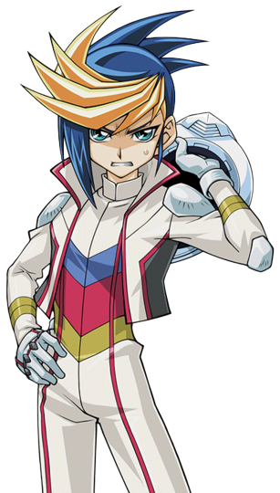
: C'est pratiquement... la moitié des points de vie !
Yugo ajouta, maintenant légèrement pâle.
: C'est exactement pour cela que tu dois modifier ton Deck, pour ne pas avoir à faire face à cet inconvénient. Les Duellistes s'assurent qu'ils n'ont pas de
cartes magiqes ordinaires pour éviter ce problème. En raison de l'utilisation limitée des "Speed Spell", les Riding Duellistes ont tendance à compter davantage sur
leurs monstres et leurs pièges. Tu devrais en faire de même.
Ce dernier conseilla. Yugo s'accrocha et soupira bruyamment.
: Zut. Juste quand je commençais à aimer ce nouveau monde...
Le jeune garçon se plaignit.
: Moi non plus je ne suis pas d'accord avec ça, mais nous devons nous adapter si nous devons rester ici un certain temps. Alors fait avec.
Disait Rin, redevenant rapidement elle même. Sur ce, Yugo accepta et commença les changements nécessaires pour survivre et gagner le prochain duel...
Fin du Flashback
Yugo n'aimait peut-être pas cette nouvelle règle des "Speed Spell" (En fait, il la déteste carrément), mais il ne va pas laisser cela l'arrêter. Il allait prouver à
Jack Atlas qu'il était un Duelliste digne de son attention. Lui et Crow ont alors mis leurs casques et ont fait démarer leurs D-Wheels pour rouler.
: En premier, comme je n'ai aucun monstre sur mon terrain, je peux invoquer spécialement depuis ma main “Speedroid Beigomax ”
.
Le monstre de Yugo ressemblait à une toupie rose foncé avec deux lames de rasoir sur les côtés.
Le Tuner de Yugo ressemblait à un dé sombre en forme de pyramide avec un œil de chaque côté et une étincelle à chaque extrémité.
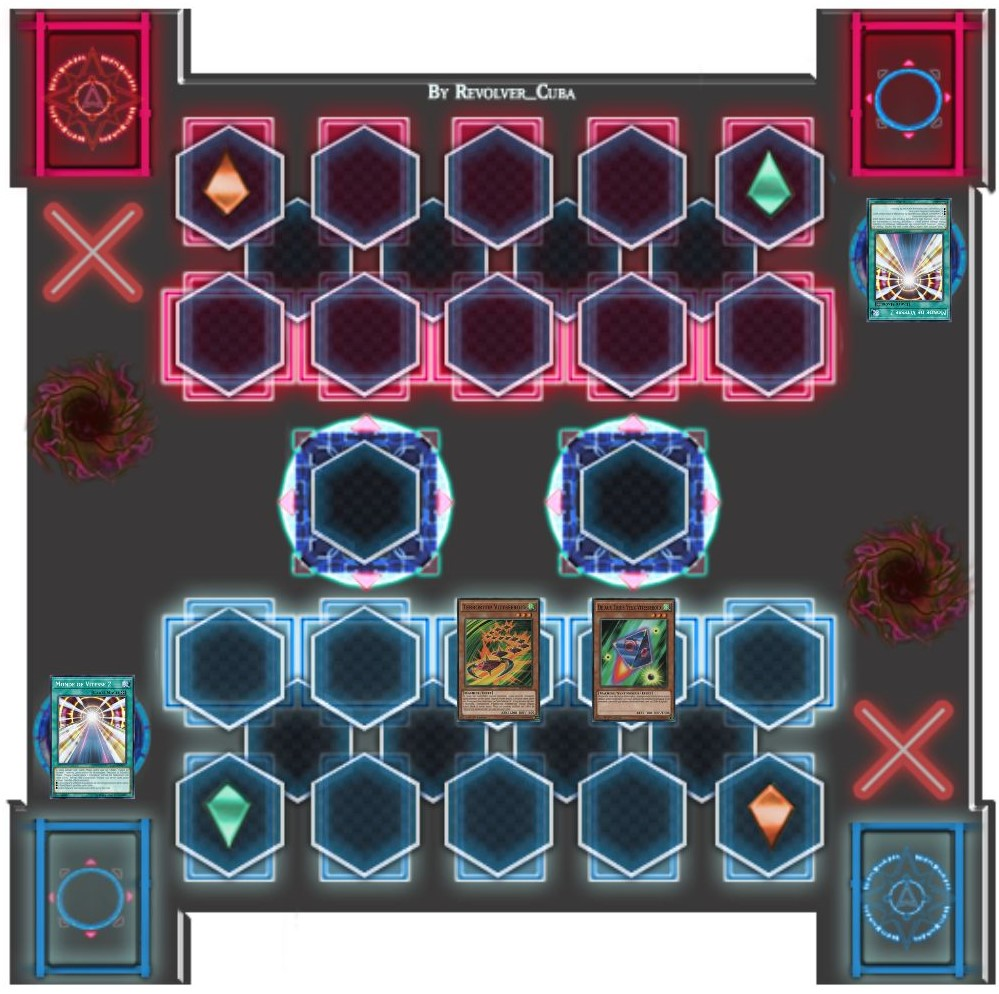
: Il devient sérieux dès le début, hein ?
Crow se disait à lui-même.
: Je syntonise
“Beigomax ”
de niveau 3 et
“Mitsume no Dice ”
de niveau 3 ! Epée maudite en forme de croix ! Que ta puissance tranche tous tes ennemies ! Synchro Shōkan ! Montre-toi ! Niveau 6 !
“High Speedroid Maken Dama ”
!
Le Monstre Synchro de Yugo ressemblait à un char high-tech bleu foncé avec une épaisse armure.
: J'active maintenant l'effet de
“Maken Dama ”
! Une fois par tour, je peux bannir du cimetière un monstre "Speedroid" afin d'infliger 500 Points de dommages à l'adversaire.Je bannis
“Speedroid Beigomax ”
!
Crow grogna en encaissant les dégâts inattendus, mais faibles, qui lui étaient infligés.
: Kuuh...
(Crow: 4000 LP - 500 LP = 3500 LP)
: Je pose 1 carte face cachée et je termine mon tour.
: Très bien Crow, montre-moi ce que tu as dans le ventre !
Yugo lanca son défi.
: Il a déjà infligé des dégâts Crow !
Ruka commenta, impressionnée.
: Ouais.
Rua a ajouté.
: Pas mal pour un premier tour.
: C'est un bon début, mais le duel ne fait que commencer.
Répondit Yusei. Jack ne fit pas de commentaire et a regardé le duel se dérouler.
Crow a souri en entendant les paroles de Yugo.
: Fais attention à ce que tu souhaites ! C'est mon tour !Draw !
: Faisons cela, battle !
“Maken Dama ”
attaque
“Shinonome no Kochi ”
!
Yugo regarda son Monstre s'envoler vers l'avant, dans l'espoir de terrasser le Monstre oiseau de Crow.
: Cela n'arrivera pas ! Carte Piège activée !
“Black Sonic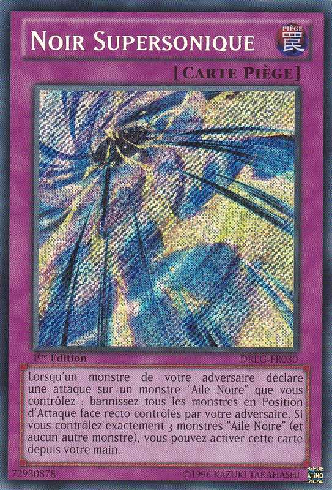 ”
! Lorsqu'un monstre "Black Feather" sur mon terrain est attaqué par un monstre de mon adversaire, tous les monstres de mon adversaire en position d'Attaque sont retirés
du jeu !
Alors dis au revoir à ton jouet high-tech, Yugo !
Crow répliqua, alors que le Monstre Synchro de Yugo disparaît de la vue.
: Merde !
Yugo maudissait.
:
“Burning Sonic ”
aurait pu sauver mon monstre du piège de Crow s'il avait essayé de le détruire. Mais avec “Maken Dama ”
qui a été banni à la place, je ne peux rien faire !
: Grr, je termine mon tour.
Disait Yugo à contrecoeur.
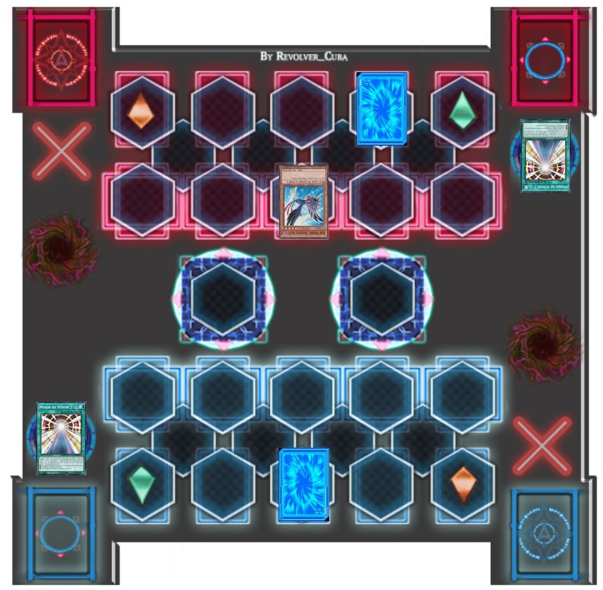
: Jusqu'à présent, je ne suis pas impressionné.
Disait Jack.
: Il a laissé son Monstre Synchro être banni et ne riposte pas. Il ferait mieux de s'améliorer s'il espère m"affronter en duel.
: Il le fera.
Yusei lui assura avec confiance.
: Je n'ai pas l'intention de te laisser gagner, Yugo ! Invoquer ton meilleur monstre dès le début n'était pas très malin de ta part !
Crow le provoqua un peu. Au lieu d'argumenter davantage, Yugo souria.
: C'est quoi ce regard ?
:Tu n'as pas encore vu mon meilleur monstre !
Disait Yugo, surprenant l'autre duelliste.
: Il possède quelque chose d'encore plus fort ?
Rua a demandé à Yusei, mais il n'a pas répondu. Jack attendait de voir le véritable meilleur monstre de Yugo et ce dont il était capable. Crow semblait plus intrigué maintenant.
: C'est vrai ? Et bien, je suis impatient de le voir alors ! C'est mon tour !Draw !
Un Monstre ressemblant à un oiseau gris avec une tête de plumes jaunes est apparu à côté de
“Kochi ”
: Je n'ai pas pu faire d'Invocation Synchro le tour dernier parce que l'effet de
“Kochi ”
ne me permettait pas de l'utiliser comme Matériel Synchro le tour où il était invoqué. Maintenant je peux faire sortir ce bad boy ! Je syntonise
“Kalut ”
de niveau 3 avec “Kochi ”
de niveau 4. Tempêtes obscurcies, devenez les ailes qui grimperont jusqu'au Paradis ! Synchro Shōkan ! “Black Feather Armored Wing ”
!
Le monstre synchro de Crow semblait être un oiseau guerrier à un oeil, portant une épaisse armure noire et orange.
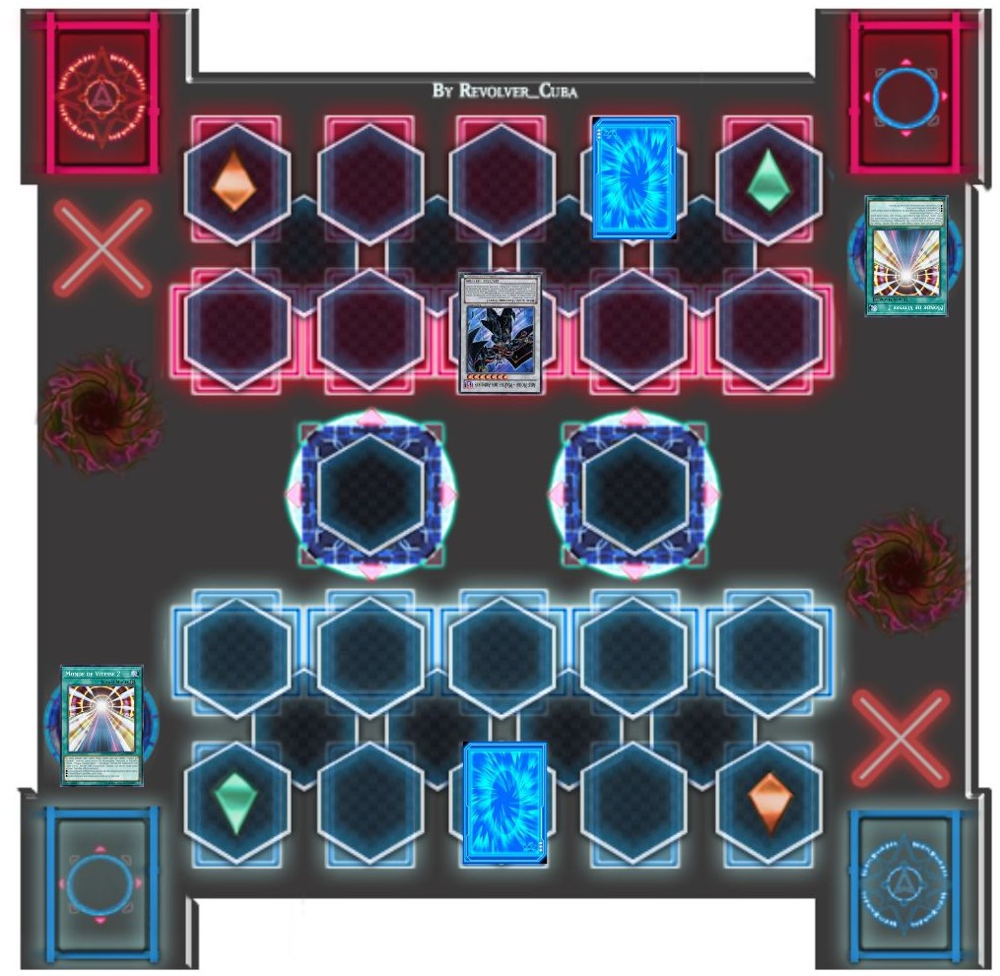
: Mec, ça c'est un monstre bien armé. Ca doit être son meilleur monstre.
“Armored Wing ”
s'est élancé vers Yugo, le poing levé pour le frapper.
: Comme si j'allais te laisser faire ! J'active l'effet de
“Speedroid Mitsume no Dice ”
se trouvant dans mon cimetière.Lorsqu'un monstre de mon adversaire lançe une attaque, je peux bannir
“Mitsume no Dice ”
pour annuler l'attaque !
Une version fantôme du Tune de Yugo est apparue et a bloqué l'attaque de
“Armored Wing ”.
: Pas trop mal. Je termine mon tour.
Crow le complimenta.
: Il a réussi à s'épargner de lourds dégâts.
: Yugo peut être dense parfois, mais pas à ce point.
Rin lui disait.
Alors que Yugo et Crow passaient à nouveau devant la ligne de départ, Rin vit la pointe d'excitation sur le visage de son ami. La même excitation qu'elle ressentait
quand il était sur le point de renverser la situation dans un duel...
: Prépare-toi Crow ! Je suis sur le point de prendre la tête ! C'est mon tour !Draw !
: J'invoque
“Speedroid Ohajikid ”
!
Le nouveau monstre de Yugo avait l'apparence d'un cowboy en jouet avec un disque vert lumineux sur le point d'être lancé.
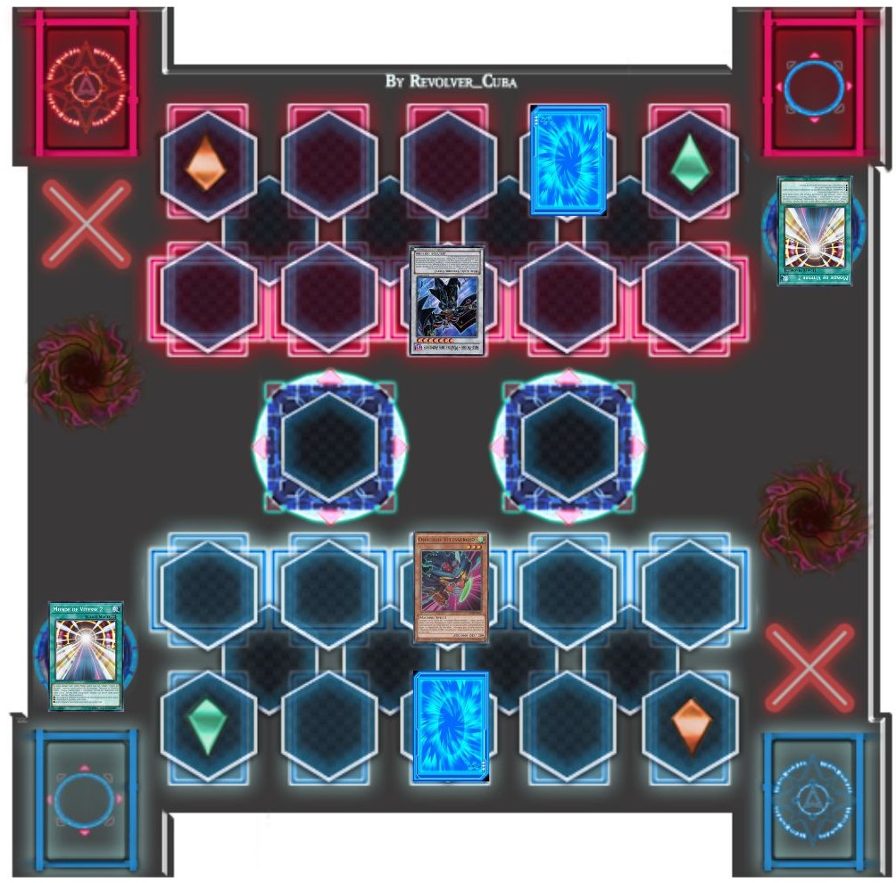
: L'effet de
“Speedroid Ohajikid ”
est activé ! Durant le tour où cette carte a été invoquée, je peux chosir un monstre Tuner se trouvant dans le cimetière adverse et l'utilise avec
“Ohajikid ”
pour effectuer une invocation Synchro !
: Qu'est ce que tu as dis !?
Crow cria sous le choc.
: Yugo utilise l'un des monstres de Crow pour invoquer le sien !?
Rua s'exclama. Jack semblait légèrement impressionné par ce geste du garçon.
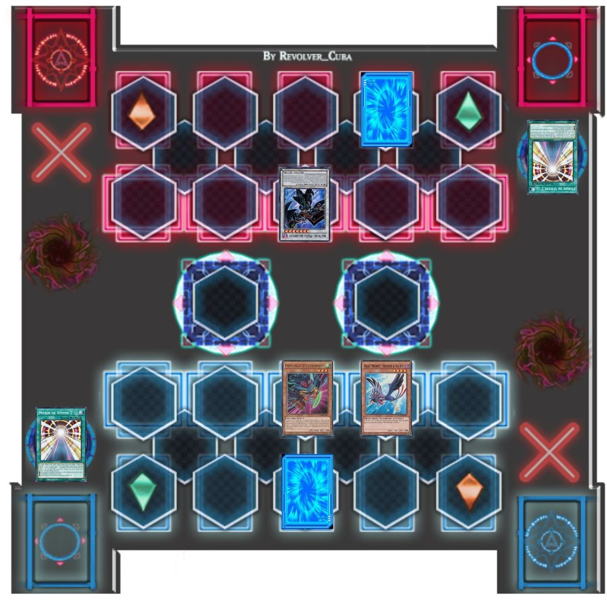
Merci de m'avoir prêté ton Monstre Tuner, Crow ! Je ne vais pas le gaspiller !
: Maintenant, je syntonise
“Ohajikid ”
de niveau 3 avec ton
“Black Feather Shinonome no Kochi ”
de niveau 4 ! Déploie tes magnifiques ailes héroïques et abats tes ennemis à la vitesse de la lumière ! Synchro Shōkan ! Montre-toi, niveau 7 ! “Clear Wing Synchro Dragon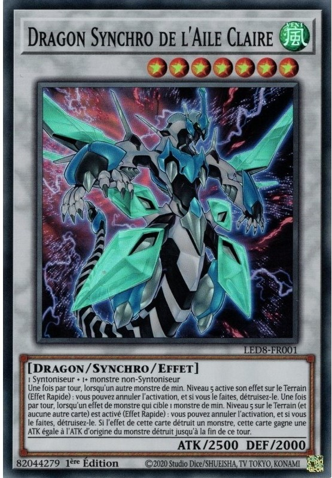 ”
!
Le véritable meilleur monstre de Yugo était un dragon rayé blanc et noir avec des morceaux d'armure bleue sur ses bras, sa poitrine et sa tête. Il portait également des ailes transparentes vert clair.
: Alors c'est lui le véritable meilleur monstre de Yugo ! Il a l'air tellement génial !
Rua a crié joyeusement.
: J'aime vraiment ses ailes !
Sa soeur jumelle ajouta.
: Yugo a donc réussi à le faire sortir.
Jack le pensa en voyant “Clear Wing ”.
Il pensait qu'il avait l'air intimidant, mais il gardait son jugement jusqu'à ce qu'il voit les capacités du dragon de ses propres yeux.
: C'était un coup bas ! Utiliser un de mes monstres comme ça !
Disait un Crow un peu irrité, très irrité même. Yugo ricana.
: Hé, ça a marché, pas vrai ? Mais tu n'auras pas à t'en occuper pour le moment. Je pose une carte face cachée et je termine mon tour !
Disait Yugo en terminant son coup.
: Il n'a pas attaqué.
: Yugo n'a probablement pas voulu faire la même erreur deux fois.
Disait Aki. Jack hocha la tête, d'accord avec elle.
: D'accord Yugo, c'est l'heure de la revanche ! C'est mon tour. Draw !
Un ninja noir clair ressemblant à un oiseau est apparu à côté de
“Armored Wing ”.
: Ensuite, j'active ma carte piège,
“Sajin no Otatsumaki ”
!
Cela ne détruit pas seulement une carte Magie ou Piège sur ton Terrain, mais je peux aussi en poser une moi-même ! Mange ça !
Crow disait avec satisfaction alors qu'il détruisit une carte face cachée de Yugo et pose sa propre carte.
: Merde ! Pas mon
“Burning Sonic ”
!
Yugo se plaignit, perdant la même carte Piège à laquelle il pensait plus tôt.
Cela n'a pas semblé déranger Crow car son
“Armored Wing ” frappa
“Clear Wing ”...
et le monstre de Crow n'était pas détruit. Cela dérouta Rin, remarquant également que les points de vie de Crow n'avaient pas diminué après l'échec de l'attaque.
: Pourquoi Crow n'a-t-il pas perdu son Monstre et n'a subit aucun dégâts ?
Elle s'est demandée à elle même. De son côté, Yugo pensait la même chose, tout aussi perplexe que son ami d'enfance.
: Qu'est-ce que ça veut dire ? Comment ça se fait que rien ne t'est arrivé !?
Yugo demanda farouchement.
: Regarde de plus près ton Monstre !
Crow dit triomphalement.
Alors qu'il le faisait, il vit quelque chose qui n'était pas là auparavant. Juste à l'endroit où
“Armored Wing ”
avait frappé Clear Wing, une grosse écharde était coincée à l'intérieur.
: Qu'est-ce que c'est que ça !?
Yugo a demandé, surpris.
:
“Armored Wing ”
ne peut pas être détruit à l'issue d'un combat et réduit les dommages de combat à 0 ! Au lieu de cela, il laisse un Kusabi Counter (Compteur Cuirasse) sur le monstre
qu'il a attaqué. En retirant ce compteur, les points d'attaques et de défense de ce monstre deviennent 0 jusqu'à la End Phase !
Ton gros dragon coriace n'est plus si menaçant maintenant !
Disait Crow alors qu'il retirait le Kusabi Counter. Cependant, les choses ne se sont pas passées comme il l'avait prévu...
: Désolé Crow, mais la plaisanterie s'est retournée contre toi !
: Désolé Crow, mais la plaisanterie s'est retournée contre toi ! J'active l'effet de monstre de
“Clear Wing Synchro Dragon ”
! Lorsqu'un monstre de niveau 5 ou plus sur le terrain active son effet, ou lorsqu'un effet de monstre qui cible un monstre de niveau 5 ou plus est activé,
“Clear Wing ”
peut annuler cet effet et détruire le monstre ! Dichroic Mirror !
: QUOI !?
Cria ce dernier. Il ne pouvait rien faire alors que son Monstre presque indestructible était désintégré par les ailes lumineuses de
“Clear Wing ”.
:
“Clear Wing ”
possède encore une surprise en réserve ! L'attaque du monstre détruit par cet effet s'ajoute à celle de “Clear Wing ”
jusqu'à la fin du tour.
Révéla Yugo alors que son dragon devenait encore plus fort.
A part Yusei et Rin, tout le monde a été totalement pris par surprise. Même Jack ne pouvait pas cacher son étonnement.
: Le dragon de Yugo possède un effet comme ça !?
Aki a dit, abasourdi.
: Oh wow, si j'avais fait un duel avec lui au lieu de Rin, j'aurais été grillé !
Disait Rua en transpirant un peu.
: Peut-être.
Rin dit d'un ton taquin.
: Merde !
Crow maugréa par le revers qu'il venait de se prendre.
: Heureusement que je suis préparé à toute éventualité ! Lorqu'un monstre "Black Feather" que je contrôle est détruit et envoyé au cimetière, je peux faire
l'invocation spéciale de cette carte. Viens, Tuner monster,
“Black Feather Sasurai no Kogarashi ”
!
Un nouveau guerrier oiseau humanoïde est apparu, couvert de plumes bleu foncé et marron.
: Tu ne pourras pas arrêter celui-là, Yugo !
“Foehn ”
peut t'attaquer directement.Vas-y !
Commanda Crow alors que l'oiseau ninja sautait par-dessus
“Clear Wing ”
et frappait Yugo, le faisant ralentir un peu.
(Yugo: 4000 LP - 500 = 3500 LP)
: Oh, et si tu penses pouvoir riposter avec ton durant le prochain tour, tu peux l'oublier ! Lorsque
“Black Feather Tessa no Foehn ”
t'inflige des dégâts avec succès, il place un monstre adverse en mode défense. De plus, la position de ce monstre ne pourra pas être changée avant la End Phase de mon prochain tour !Je change
“Clear Wing Synchro Dragon ”
en mode défense !
Déclara ce dernier.
: Maudit soit-il !
Disait Yugo, agacé de ne pas pouvoir attaquer avec son dragon pendant un moment.
: Encore une chose, tu n'est pas le seul à avoir un dragon comme meilleur monstre !
: Je syntonise
“Foehn ”
de niveau 2 avec
“Kogarashi ”
de niveau 6 ! Tempêtes obscursies, devenez les ailes qui feront raisonner l'espoir en ce monde ! Synchro Shōkan ! Rugis !
“Black Feather Dragon ”
!
Le dragon de Crow ressemblait à un dragon noir à tête d'oiseau et aux ailes pâles.
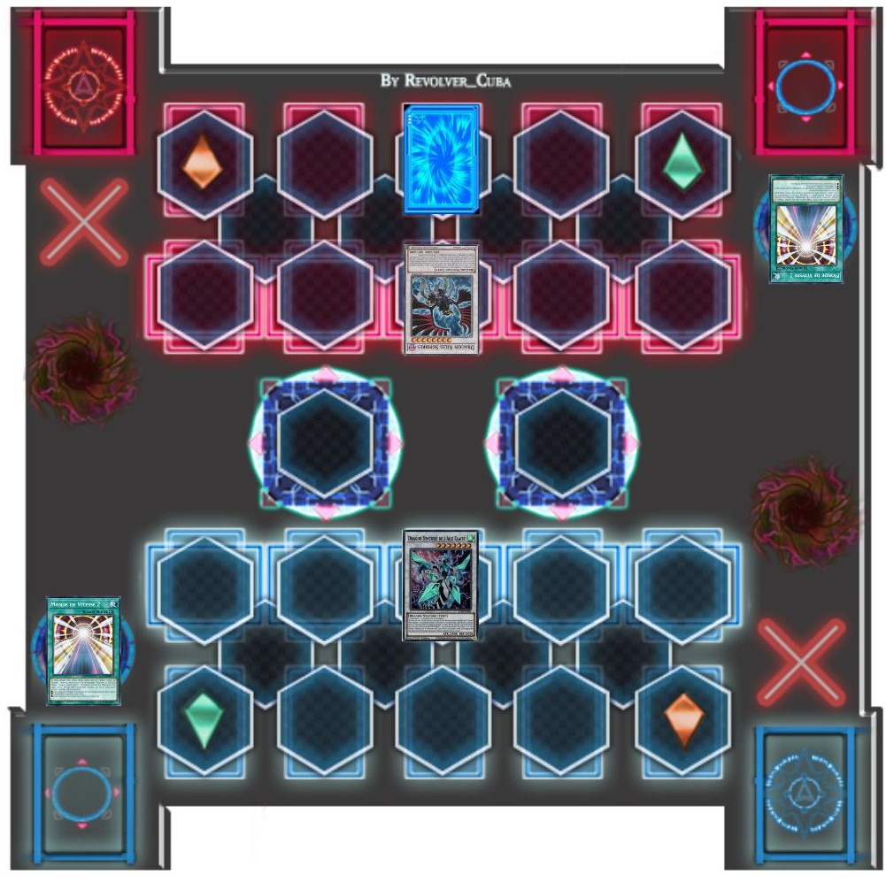
: Avec cela, je termine mon tour.Maintenant, la puissance d'attaque de ton
“Clear Wing ”
revient à la normale.
Il ajouta alors que les points d'attaque du monstre de Yugo reviennent à 2500.
(Clear Wing Synchro Dragon: 5500 ATK -> 2500 ATK)
: Crow a un dragon lui aussi !? Et il est plus fort que celui de Yugo !
S'exclama Rin.
: Oui, et comme
“Clear Wing ”
, “Black Feather Dragon ”
possède lui aussi un puissant effet. Si tu as de la chance, tu pourras le voir en action.
Disait Jack en continuant à regarder le Riding Duel, qui ne cessait de gagner en intensité.
: Mince. Crow est un puissant duelliste. Je parie que son dragon est tout aussi fort. Jusqu'à ce que je puisse attaquer avec “Clear Wing ”
, je vais devoir faire ce que je peux !
Yugo pensa avant de commencer son prochain tour.
: Je peux faire plus qu'attaquer avec des Monstres, tu sais ! C'est mon tour !Draw !
: Ouais ! J'attendais d'en utiliser un ! J'active une carte magie,
“Speed Spell Speed Demon ”
! Quand mes Speed Counter sont de 3 ou plus, je peux t'infliger 1000 points de dommages ! Ca, c'est pour avoir critiqué
“Clear Wing ”
!
Déclara Yugo, pensant avoir réussi à toucher Crow. Le Rider noir a prouvé le contraire.
: Détrompes-toi ! J'active l'effet de
“Black Feather Dragon ”
!
Lorsque je suis sur le point de recevoir des dommages, je peux annuler ces dommages en plaçant un Kurobane Counter (Compteur Plume) sur mon dragon. Mais pour chaque
compteur,
“Black Feather Dragon ”
perd 700 points d'attaques !Damage Drain !
Ce faisant, une partie des ailes du dragon devinrent noire et rouge.
(Black Feather Dragon: 2800 ATK - 700 = 2100 ATK)
: Le dragon de Crow peut lui aussi annuler les dommages !?
Rin haleta. Cela pourrait définitivement être un problème.
: Merde ! Donc je ne peux pas non plus l'endommager avec des effets de carte !? Putain... Je termine mon tour.
: Contrairement à toi, je vais définitivement t'infliger des dégâts ! J'active l'effet de
“Speed World 2 ”
! En retirant 4 de mes Speed Counters, je peux t'infliger 800 points de dommages pour chaque "Speed Spell" que j'ai en main. Je possède “Speed Spell Angel Baton ”
dans ma main, ce qui signifie que tes Points de Vie viennent juste de baisser de 800 points !
(Crow / Speed Counter: 7 - 4 = 3 Speed Counter)
: Tu plaisantes j'espère !?
Yugo se plaignit, incrédule en subissant des dégâts, d'autant plus furieux qu'il n'avait pas réussi à faire de même à Crow au dernier tour.
(Yugo: 3500 LP - 800 = 2700 LP)
: Désolé Yugo, mais il n'y a aucune pitié de la part de "Crow la Balle" ! Je termine mon tour !
: Attends ! Comment se fait-il que Crow n'ait pas attaqué
“Clear Wing ”
? Même si
“Black Feather Dragon ”
est plus faible maintenant, il pouvait toujours détruire le dragon de Yugo alors qu'il est en mode défense. Alors pourquoi ne l'a-t-il pas fait ?
Rua demanda.
: Il veut surement attendre le bon moment pour lançer son attaque
Aki essaya de deviner.
À ce moment-là, Rin s'est levée dans les tribunes et commenca à crier sur Yugo.
: Allez Yugo ! Tu ne vas pas te laisser faire par Crow comme ça, hein ? Défends-toi et gagne ! Prouve leurs que tu peux te mesurer à Jack Atlas !
Jack était amusé par l'esprit de la fille. Yugo l'entendit et lui fit un salut de deux doigts.
: Très bien Rin ! Je ne te laisserai pas tomber ! C'est mon tour !Draw !
: Ok, peut-être que ça, ça va marcher ! D'abord, je remets
“Clear Wing Synchro Dragon ”
en mode attaque ! Ensuite, j'active “Speed Spell Synchro Return ”
! Lorsque je possède 5 Speed Counters ou plus, si j'ai un monstre Synchro banni, je peux ramener ce monstre sur mon Terrain jusqu'à la End Phase ! Reviens à mes côtés,
“High Speedroid Maken Dama ”
!
Le premier Synchro que Yugo avait invoqué est revenu dans la mêlée.
: Ca c'est l'esprit !
Rin l'encouragea.
: Je pourrais attaquer avec
“Clear Wing ”
, mais quelque chose me dérange.
“Black Feather Dragon ”
peut annuler les dégâts, mais dans le processus, il perd de la puissance d'attaque en plaçant un compteur sur cette fichue chose.
“Armored Wing ”
possédait également un effet impliquant des compteurs, et cela aurait pû mal se finir pour moi si l'effet de
“Clear Wing ”
n'était pas intervenu. Ce monstre a essayé de prendre toute la puissance de mon dragon en lui retirant son Kusabi Counter. Le dragon de Crow pourrait-il avoir un effet
similaire ? Et si c'est le cas...
Yugo fit le seul mouvement qu'il pouvait.
Demanda Aki. Yusei avait une idée de pourquoi alors que l'attaque se déroulait.
: Piège activé,
“Black Wing ”
! Lorsqu'un monstre de mon adversaire attaque, je peux bannir un monstre "Black Feather" de mon Cimetière pour annuler non seulement cette attaque, mais aussi les
attaques de tous tes monstres qui ont 2000 Points d'Attaque ou plus ce tour-ci ! Je bannis
“Foehn ”
!
Crow déclara, en utilisant son Monstre pour stopper l'attaque de Yugo.
: C'est pas vrai ! Il a encore arrêté les attaques de Yugo !
Rin se plaignit.
: Oh allez quoi ! N'es tu jamais à court de ruses toi !?
Yugo cria avec agacement. Crow a ricané.
: Qu'est-ce que je peux dire ? Je suis un gars rusé ! Qu'est-ce que tu t'attendais de ma part ?
Yugo gémit intérieurement. Il pensait que la carte face cachée de Crow pouvait arrêter l'attaque de
“Dama ”,
mais empêcher “Clear Wing ”
d'attaquer également était quelque chose à laquelle il ne s'attendait pas. Pourtant, il y avait une chose qu'il n'avait pas encore essayée.
: J'active l'effet de
“Speed World 2 ”
. En retirant 7 Speed Counters, je peux piocher 1 carte supplémentaire. C'est partit, DRAW !
(Yugo / Speed Counter: 8 - 7 = 1 Speed Counter)
En voyant la carte qu'il a pioché, Yugo a vu un espoir de victoire et la preuve qu'il serait digne de se battre en duel avec Jack Atlas.
: Je pose 2 cartes face cachées, et je termine mon tour.Durant la End Phase,
“Maken Dama ”
est à nouveau banni à cause de l'effet de
“Synchro Return ”
.
Yugo expliquait, alors que son tout premier monstre synchro disparût encore une fois.
Jack commençait à penser que Yugo pourrait ne pas gagner après tout s'il ne faisait pas quelque chose rapidement. Pourtant... si ce qu'il a entendu de Yusei était
vrai, Yugo n'allait pas abandonner tout de suite. Donc, il a attendu.
: Yugo...s'il te plaît n'abandonne pas.
Rin pria d'une voix basse.
Rua a vu à quel point Rin croyait en lui. La façon dont elle le regardait, voulant qu'il réussisse...
: Crow est fort, mais... Je pense que Yugo a encore une chance.
Rin baissa les yeux vers le garçon, surpris par ce qu'il disait.
: Tu penses ? Ne veux tu pas que ton ami gagne ?
Rua lui a souri.
: Cette fois-ci... j'encourage l'adversaire.
Le garçon a admis. Il était sincère. Il espérait que Yugo gagnerait pour que Rin puisse être heureuse. Et Rua voulait que Rin soit heureuse.
: Merci Rua.
L'adolescente lui disait doucement. Rua a rougi et a détourné le regard.
De retour au Duel, alors que les Riders noirs et blancs passaient la ligne de départ une fois de plus, les deux dragons rugissaient l'un contre l'autre. Yugo était
frustré de ne pas pouvoir faire de dégâts à Crow. Espérons que cela va changer très bientôt...
: Prépare-toi Yugo ! J'ai l'intention d'en finir ici et maintenant ! C'est mon tour !Draw !
: D'abord, je joue
“Speed Spell Angel Baton ”
! Quand j'ai au moins 2 Speeds Counters, je pioche 2 cartes de mon Deck, et ensuite, j'en envoie une de ma main au cimetière !
Crow a ensuite souri. Il est temps de faire quelque chose d'inattendu.
: Je joue maintenant
“Goyoku na Tsubo ”
, qui me permet de piocher deux autres cartes supplémentaires !
Ce coup surpris Yugo et Rin !
: Attends, quoi !? Je pensais qu'il ne fallait pas faire ça !?
Yugo a demandé avec une surprise stupéfiante.
: Crow ne va-t-il pas prendre 2000 points de dommages en utilisant une carte non "Speed Spell" !?
Rin demanda incrédule, mais elle se souvint ensuite de l'effet du dragon de Crow. Ce dernier sourit en voyant la réaction de Yugo.
: Normalement non, mais grâce à
“Black Feather Dragon ”
, ce ne sera pas un problème ! Damage Drain !
Crow expliqua que son dragon utilisa à nouveau son effet pour annuler les dégâts. D'autres ailes du dragon changea de couleur comme avant pour devenir noir.
Le précédent Monstre Synchro de Crow est revenu pour se tenir aux côtés du meilleur monstre de son maître. Comme précédemment,
“Black Feather Dragon ”
utilisa son effet une fois de plus. A ce stade, les trois quarts de ses ailes étaient maintenant noires et rouges.
(Black Feather Dragon: 1400 ATK - 700 = 700 ATK)
: Encore !? Mais pourquoi ?
Yugo s'interrogea, déconcerté par cette tactique inattendue.
: Pourquoi rendre son Monstre aussi faible ? Qu'est-ce que Crow essaie de... ?
Rin sursauta alors et se couvrit la bouche.
: Oh non ! Ne me dis pas que !
Elle a pris conscience d'un fait choquant. C'était similaire à la façon dont
Sergey faisait un duel, sauf que
c'était les points d'attaque du monstre de Crow qui étaient diminués, et non ses points de vie. Si elle avait raison, alors Yugo pourrait avoir de sérieux problèmes.
: Allez, Yugo ! Je sais que tu ne peux pas risquer de perdre ton dragon maintenant !
Se disait Crow dans son esprit. Il n'était pas déçu.
: Piège activé,
“Clear Shield ”
! Si je contrôle
“Clear Wing Synchro Dragon ”
et qu'il est sur le point d'être détruit au combat, je peux annuler sa destruction jusqu'à la End Phase !
Déclara Yugo, protégeant son précieux dragon pour qu'il n'aille pas au cimetière.
: Oh, et ne crois pas que j'ai oublié l'effet de ton monstre, Crow !
: Yugo, non ! N'utilise pas encore l'effet de
“Clear Wing ”
!
Rin essaya de le prévenir, mais son ami ne tint pas compte de son avertissement à temps.
Comme la dernière fois, après que “Armored Wing ”
ait placé un Kurobane Counter sur “Clear Wing ”
et l'ait retiré, le dragon de Yugo annula une fois de plus les effets de
“Armored Wing ”, le détruisit,
et gagna tous ses points d'attaques.
: Maintenant je te tiens ! J'active l'effet de
“Black Feather Dragon ”
! Une fois par tour, en retitrant tous ses Kurobane Counter, mon dragon regagne toute sa puissance d'attaque qu'il avait perdue... et affaiblit la puissance d'attaque
de ton monstre par le même montant. De plus, tu subis des dommages équivalents à la puissance d'attaque que mon dragon avait perdue ! BLACK BURST !
: QUOI !?
Yugo hurla, horrifié par la tournure des événements. D'abord, il vit les ailes et la puissance d'attaque de
“Black Feather Dragon ”
revenir à la normale. Ensuite, il a assisté à la diminution des points d'attaque de
“Clear Wing ”,
puis a subi les dégâts qui en découlaient.
: Maintenant, pour la touche finale ! J'active deux copies de
“Speed Spell Speed Energy ”
! Lorsque je possède 2 Speed Counters ou plus, je peux augmenter les points d'attaque d'un de mes monstres de 200 pour chaque Speed Counter que je possède
jusqu'à la End Phase ! Je possède 5 Speed Counters, ce qui signifie que
“Black Feather Dragon ”
gagne 1000 Points d'Attaque ! Cependant, comme je joue avec deux de ces méchants garçons... cette augmentation sera doublée !
Déclara Crow.
: Cela signifie que le monstre de Crow gagne 2000 Points d'Attaque !
Le dragon de Crow a libéré une puissante explosion rouge foncé de sa bouche. Même si le dragon de Yugo ne pouvait pas être détruit, il subirait tout de même des
dégâts... qui seraient plus que suffisants pour l'achever.
: Yugo !
Rin a crié. On dirait que Crow avait eu Yugo durant ce duel. Jack est resté impassible en attendant le résultat final. Ce résultat, cependant, n'était pas celui que
Crow avait prévu.
: Ca ne se terminera pas ici ! Carte Piège activée !
“Tsuiso no Tsubasa ”
! En ciblant
“Clear Wing ”
par cet effet, il ne pourra pas être détruit au combat !
Déclara Yugo en activant la carte qu'il a tirée par l'effet de
“Speed World 2 ”.
: Mais il est déjà immunisé contre la destruction !
Fit remarquer Crow.
: Il y a mieux ! Si le monstre ciblé est attaqué par un monstre de niveau 5 ou plus, je peux détruire ce monstre et donner les points d'attaque du monstre
détruit à
“Clear Wing ”
!
: Quoi !?
Crow, ne croyant pas ce qu'il venait d'entendre. Tout le monde regarda la dernière attaque de Crow être annulée, son meilleur monstre détruit, et le Monstre de Yugo
devenir incroyablement plus fort.
: Oui ! Je savais que tu ne lâcherais rien, Yugo !
Rin cria joyeusement. Yusei sourit de cela aussi... ainsi que Jack.
: Merde ! J'étais si près du but ! Bien, je termine mon tour
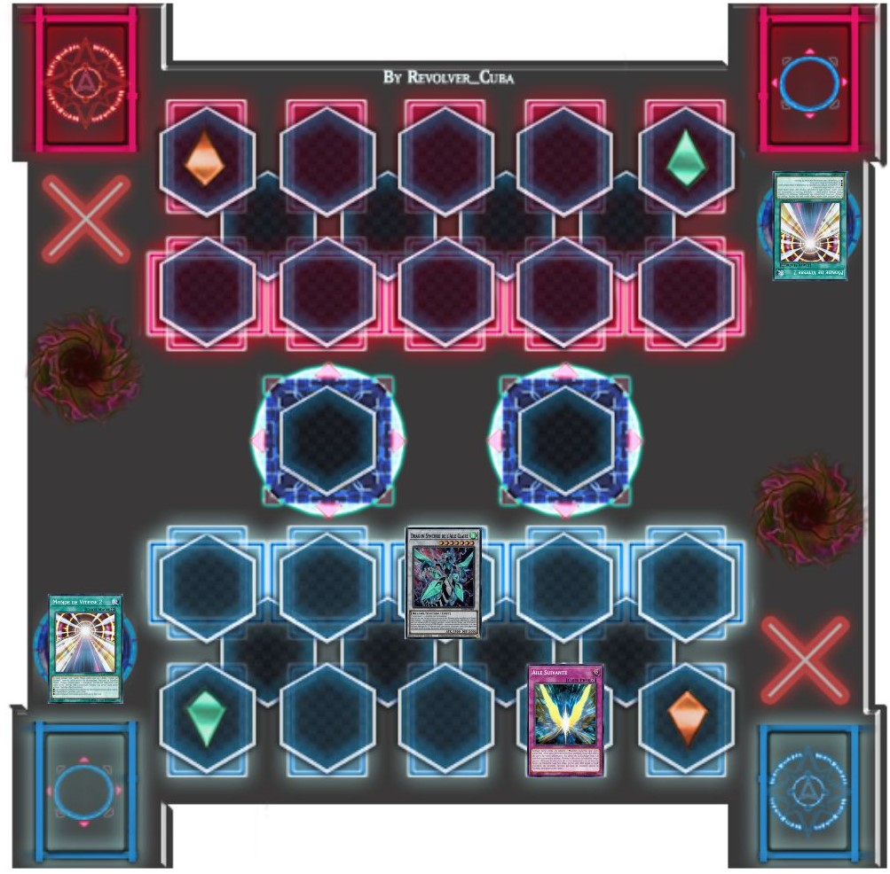
Puisque son tour était terminé, le boost de Points d'Attaque de
“Clear Wing Synchro Dragon ”
provenant de son combat contre “Armored Wing ” s'est dissipé.
“Clear Wing ”
se mit à tournoyer dans les airs dans un anneau cyclonique coloré avant de frapper Crow et d'anéantir ses derniers points de vie. Ce faisant, Crow ne pouvait s'empêcher
de sourire...
(Crow: 3500 LP - 7300 LP = 0 LP)
: Bien joué Yugo !
Cria Rin en levant le poing en l'air.
Jack hocha la tête tout en souriant.
: Pas mal Yugo. Pas mal du tout...
Alors qu'il venait de perdre, la D-Wheel de Crow laissa échapper un condensé de vapeur tout en s'arrêtant progressivement. Yugo s'est alors arrêté à côté de lui.
Ils se sont dévisagés un moment avant que Crow ne grogna avec un sourire.
: Belle victoire, petit. Tu es vraiment bon !
Crow admettait, en tendant son poing. Yugo sourit en retour, en frappant son poing contre celui de Crow.
: Merci ! Tu n'étais pas mauvais non plus !
Disait Yugo avant que les deux duellistes ne se mettent à rire.
Au moment où ils descendirent de leurs D-Wheels et enlèvèrent leurs casques, le groupe les rejoint. Rin fit un énorme câlin à Yugo.
: Je savais que tu pouvais le faire, Yugo !
Rin disait, sans remarquer que Yugo rougissait un peu.
: Ouais, eh bien ... Je n'allais pas laisser une cervelle d'oiseau me botter le cul, non ?
Yugo disait en se grattant l'arrière de sa tête.
: J'ai entendu.
Crow murmura, mais sourit néanmoins.
: Tu es génial Yugo !
Répondit Rua.
: Tu l'es vraiment !
Ruka a ajouté.
: J'aurais du mal à me battre en duel contre quelqu'un comme toi.
Aki lui dit admirablement.
: Tu as très bien joué Yugo.
Disait Yusei, lui donnant un sourire.
Ils se sont ensuite tournés vers Jack, attendant d'entendre ses mots. Il est apparu sans expression, ne laissant rien transparaître. Yugo a alors commencé à être
nerveux. Juste au moment où le garçon pensait que le duelliste plus âgé n'allait pas dire un mot...
: Peut-être que tu pourrais être un défi pour moi après tout.
Yugo a sursauté, ainsi que Rin.
: Tu veux dire ... nous pouvons nous battre en duel ?
Il a demandé d'une voix basse et pleine d'espoir. Jack lui sourit.
: Quand tu le voudras.
Yugo se sentit déborder de joie et d'excitation.
: OUAIS !!!
Yugo a crié en sautant dans les airs, le poing levé. Il sentait que c'était un rêve devenu réalité.
: Rin ! Je vais avoir un duel avec Jack Atlas ! Est-ce que tu arrives à y croire !?
Rin n'avait jamais vu son ami aussi heureux.
: Je sais ! J'ai vraiment hâte d'assister à cela !
Rin dit joyeusement.
Tout le monde avait également hâte de voir ce duel. Ce serait certainement un duel qui vaudrait la peine d'être vu. Leur célébration fut interrompue lorsqu'ils
entendirent tous un fort bruit à proximité.
: D'où est-ce que ça vient ?
Demande Crow, en regardant autour de lui.
: Là !
Rua a crié en désignant la D-Wheel de Yusei. Au grand choc de ce dernier, l'écran de son Duel Disk clignotait en rouge.
Yusei s'est inquiété en courant vers sa D-Wheel et en détachant son disque de duel. Les autres l'ont suivi, voulant savoir ce qui se passait.
: Pourquoi ton disque de duel fait-il cela ?
Demande Rin. Yusei est devenu plus alerte.
: Je ne te l'ai pas dit Rin, mais tu n'es pas la seule cible de Akaba Leo.
: Quoi ?
Rin demanda sous le choc, Yugo aussi.
: Comment ça, elle n'est pas la seule cible ? Après qui d'autre cette ordure en a t-il après ? !
: Il y a 3 autres filles sur lesquelles Leo essaie de mettre la main, en plus de Rin. J'ai des amis qui ont été envoyés pour protéger ces autres filles de
lui. Maintenant, l'un d'entre eux appelle à l'aide. C'est ce que signifie cette lumière rouge.
Yusei expliqua.
: Un signal de détresse !
Crow réalisa.
: Précisément. Je dois voir qui a besoin d'aide.
Lorsque Yusei tapa sur l'écran rouge, il a vu un objet très familier... une pyramide.
: Qu'est-ce qui pourrait se passer de son côté pour qu'il ait besoin de nous tous ? Quoi qu'il en soit, ça doit être sérieux.
Yusei s'est ensuite tourné vers les autres.
: Le dirigeable d'Astral sera là pour me récupérer d'une minute à l'autre.
Il a déclaré, ce qui choqua tout le monde.
: Tu pars déjà ? Mais tu viens juste de rentrer !
Rua se plaignit.
: Je sais, mais on a besoin de moi. On ne peut rien y faire, Rua
Disait Yusei, de la tristesse dans la voix.
: Ne devrais t-on pas venir avec toi ?
Aki suggéra, mais Yusei a secoué sa tête.
: J'ai besoin que vous restiez ici avec Yugo et Rin. De plus, il n'y aura pas que moi pour aider Yugi-san. Judai-san, Yuma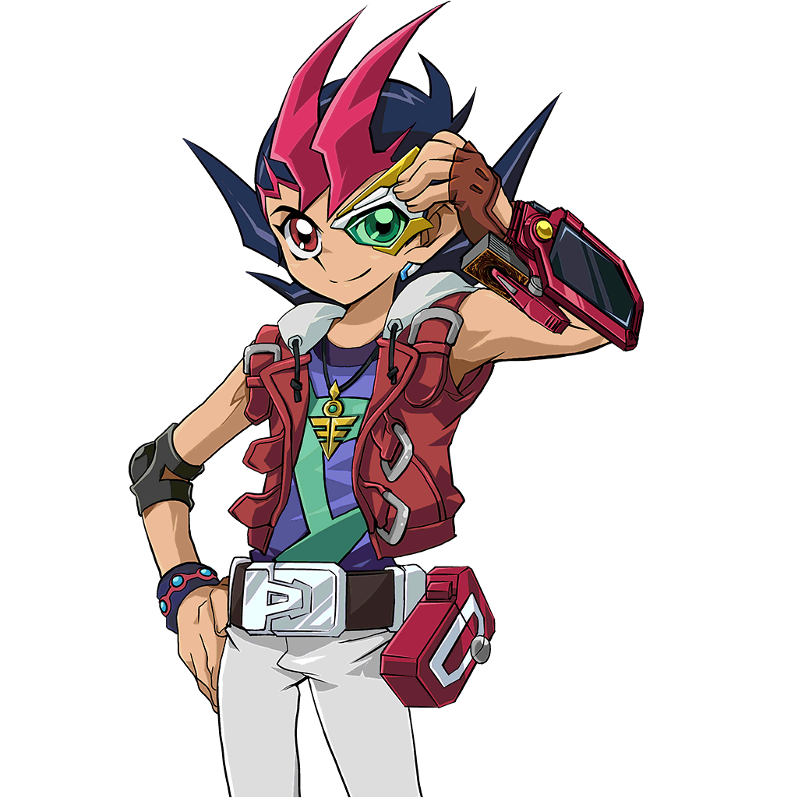 et Astral seront là pour nous aider aussi.
Yusei les rassura.
Rin a alors vu Aki, qui avait l'air très déçu.
: Pour combien de temps tu seras parti cette fois ?
Ruka lui demanda.
: Je ne sais pas. Mais je resterai en contact.
Yusei s'est alors tourné vers Yugo.
: Yugo, pendant que tu étais endormi, j'ai relié mon Duel Disk au tien. De cette façon, nous pouvons communiquer même si nous sommes littéralement dans des
mondes à part.
: Woah, vraiment ?
Demanda Yugo, étonné par cela.
: En effet. Les autres ont dû faire de même chez eux.
Juste à ce moment-là, un grand boom se fit entendre d'en haut. Lorsque le gang leva les yeux, ils étaient stupéfaits de voir un gigantesque vaisseau inconnu au-dessus de
la piste de course.
: La vache ! C'est le vaisseau dont vous parliez !?
Demanda un Crow abasourdi. Une autre voix avait répondu pour lui.
???: Yusei, es-tu là ? Réponds s'il-te plaît.
Yusei a répondu immédiatement.
: Je suis là, Astral. Quelle est la situation ?
: Nous ne savons pas encore. Yuma et moi venons de recevoir le signal de détresse de Yugi. L'as-tu reçu ?
Astral demanda.
: A l'instant.
Yusei a répondu.
: As-tu déjà récupéré Judai-san ?
: Ce sera notre prochain arrêt avant notre rendez-vous avec Yugi. Es-tu prêt à partir ?
: Attends !
Quelqu'un a crié avant que Yusei puisse répondre. Tout le monde a regardé pour voir que c'était Aki. Elle s'est approchée de Yusei avec une expression inquiète.
: Es-tu sûr que... tu vas t'en sortir ?
Yusei lui hocha la tête en souriant.
: Je vais bien, Aki. J'espère que je serai bientôt de retour.
Il lui dit.
À la surprise de tout le monde, Aki a donné à Yusei une bise rapide sur la joue. Le jeune homme est resté bouche bée en touchant l'endroit où Aki l'a embrassé. Il était sûr
d'être taquiné à ce sujet plus tard.
: Reviens sain et sauf, Yusei.
Elle lui dit avant de s'éloigner.
Rin sourit, sachant qu'elle avait raison de dire qu'Aki avait des sentiments pour cet homme. Yusei a retrouvé son calme un moment plus tard.
: Va botter leurs fesses, Yusei !
Cria Crow.
: Nous allons tous t'encourager !
Rua a ajouté.
: S'il te plaît, fais attention à toi Yusei.
Ruka lui disait.
: Ouais, reviens vite mon pote !
Yugo dit, levant son poing en l'air.
: Bonne chance !
Rin l'encouragea.
: Tu ferais mieux de revenir, Yusei. Nous avons encore un compte à régler. Jack l'avertit.
Yusei a ri, sachant ce qu'il voulait dire.
: Je reviendrai tout le monde.
Yusei a dit à ses amis avant de donner sa réponse à Astral.
: Astral, je suis prêt. Allons-y !
: Bien sûr. En attente.
Yusei fut alors couvert d'une grande lumière verte descendant du vaisseau. Quand elle devint rouge, Yusei a regardé tous ses amis. Avant de les quitter, il a
aperçu une dernière fois Aki avec une expression pleine d'espoir. Elle lui a dit quelque chose qui l'a rendu encore plus déterminé à retourner chez lui. Avec Yusei
à bord, le vaisseau s'est élevé et a disparu en un éclair.
Ils ont tous levé les yeux, leur ami leur manquant déjà.
: Yusei est un super type, pas vrai Aki ?
Demanda Rin en se tournant vers la fille plus âgée.
Aki hocha la tête tout en continuant à regarder en l'air, souriant.
 ,
un grand jeune homme aux cheveux blonds hérissés et portant des vêtements de rider blancs et gris, observa le comportement enfantin de
,
un grand jeune homme aux cheveux blonds hérissés et portant des vêtements de rider blancs et gris, observa le comportement enfantin de


 : Oui monsieur, je le veux.
: Oui monsieur, je le veux. : Bien sûr.
: Bien sûr. : OUI !!! Tu as entendu ça Rin !? J'ai une chance de me battre en duel avec Jack Atlas ! C'est pas génial ça !?
: OUI !!! Tu as entendu ça Rin !? J'ai une chance de me battre en duel avec Jack Atlas ! C'est pas génial ça !?
 : C'est la vérité. S'il te plaît, calme-toi Rin.
: C'est la vérité. S'il te plaît, calme-toi Rin.

 : Hey Yugo ! Tu es prêt pour notre duel ?
: Hey Yugo ! Tu es prêt pour notre duel ?


 : Il a déjà infligé des dégâts Crow !
: Il a déjà infligé des dégâts Crow !


 : C'était un coup bas ! Utiliser un de mes monstres comme ça !
: C'était un coup bas ! Utiliser un de mes monstres comme ça !

 : Le dragon de Yugo possède un effet comme ça !?
: Le dragon de Yugo possède un effet comme ça !?


 : Tu l'es vraiment !
: Tu l'es vraiment !


 : S'il te plaît, fais attention à toi Yusei.
: S'il te plaît, fais attention à toi Yusei.